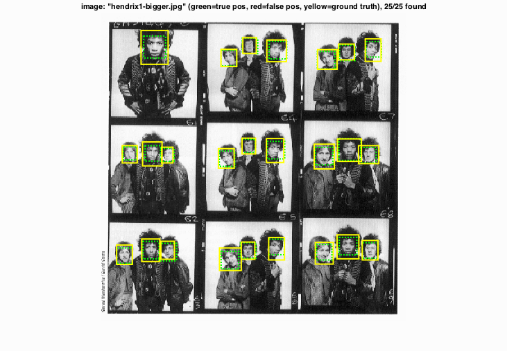
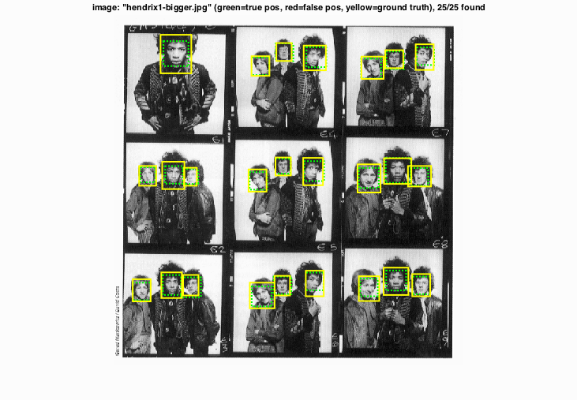

CS6476: Project 5 / Face Detection with a Sliding Window
Goal
In this project, we want to implement the face detector by independently classifying all image patches as being face or non-face.
Method
To achieve the function of face detection, we divide the project into three steps:
- Getting training features: according to Dalal and Triggs's paper, the feature can be represented by the Histogram of Oriented Gradients (HOG). Correspondingly, we compute the feature using HOG. In baseline implementation, we use 6 as number of orientation, and then 9 to test the performance
- Positive images are taken from the Caltech database, and cropped and resized into 36 x 36
- Negative images are randomly taken from a database of non-face images
- Training Classifier: Support Vector Machine is used to train a classifier that is able to detect faces from non-faces. SVM works well for high-dimensional data, since it is fast to train and fast to execute. With fine tuning the regularization parameter, lambda, of SVM, the performance of classifier gets better
- Running face detector on test images: for each image, run the classifier at multiple scales and then use non-maximum suppresion to remove the duplicate detections
Results
Face Template HOG Visualization
Cell Size = 6
Cell Size = 9
Threshold = 0.5, cell size = 6, Multi-scale Factor = 0.85
Threshold = 0.75, cell size = 6, Multi-scale Factor = 0.85
Threshold = 0.85, cell size = 6, Multi-scale Factor = 0.85
Threshold = 0.5, cell size = 9, Multi-scale Factor = 0.85

Threshold = 0.75, cell size = 9, Multi-scale Factor = 0.85

Threshold = 0.85, cell size = 9, Multi-scale Factor = 0.85
 

Bonus test scenes (using cell size = 9, threshold = 0.75, multi-scale factor = 0.85)

Discussion
In this project, the functions implementation is quite straightforward, but tuning the parameters makes huge difference in terms of performance of face detector.
- In run_detector function, I worked with threshold value of 0.5, 0.75, and 0.85 respectively. The higher the threshold is, the lower the average precision will be, since higher threshold incline to penalize the false positive. Obviously, we can see more red rectangulars in threshold of 0.5 than 0.85
- In run_detector function, the improving rate of downsample also helps enhace the performance. We started to use the rate of 0.7 to debug, then end up with 0.85 to test the performance. The best average precision under this situation is 0.892.
- The size of HOG cell also makes contribution to the performance. In our test, the best average precision under size of 6 is 0.840, and size of 9 is 0.892
- For SVM, regularization factor, lambda, is the key to the performance. In our experiment, lambda = 0.0001 works best